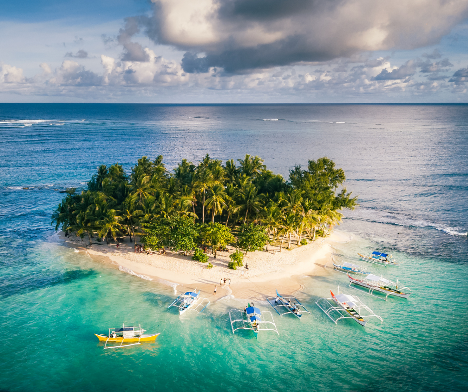
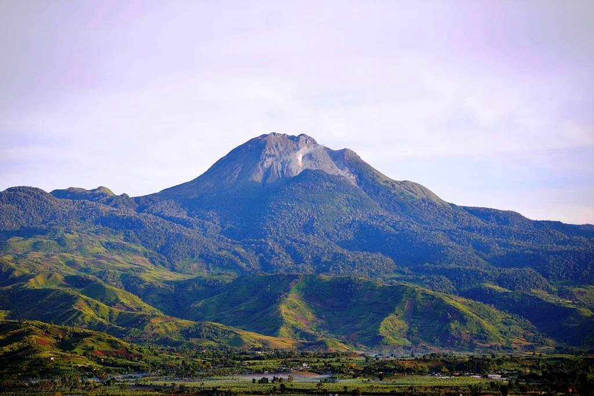
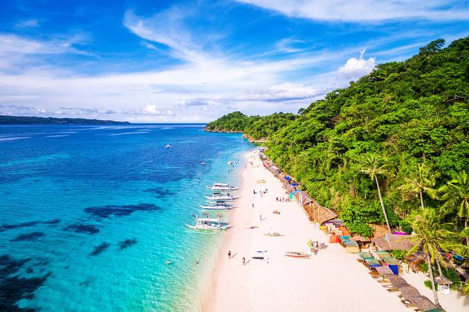

TOURIST SPOT
| HOME | PLACE | FOOD |
|---|
 Manila Cathedral It is famous as the "Mother of all Churches" in the Philippines,Located in the historic walled city of Intramuros. |
 Siargao Island Siargao is a tear-drop shaped island in Surigao del Norte, globally renowned as the country's surfing capital. |
 Mayon Volcano located in Albay province on the island of Luzon, is the most active volcano in the Philippines |
.jpeg) Rizal Park Rizal Park, also known as Luneta Park, is a 58-hectare (143-acre) historical urban park located in the heart of Manila, Philippines. |
.jpeg) Banaue Rice Terraces a 2,000-year-old engineering marvel in the Ifugao province of the Philippines, carved into the mountains by indigenous ancestors. |
VISAYAS
|
 Mt.Apo Known as the "Grandfather of Philippine Mountains," this volcano features a hike through mossy forests, large boulder fields, and sulfur vents. |
 Chocolate Hills is a world-famous geological wonder in Bohol, Philippines.Spanning over 50 square kilometers, |
 Boracay Island Boracay is located in the Visayas, specifically in the Western Visayas region as part of the province of Aklan. |
 Fort San Pedro the oldest triangular bastion fort in the Philippines. Built originally by the Spanish in 1565, the historic coral stone structure. |
 z zKawasan Falls Located in Badian, Cebu, Kawasan Falls is globally famous for its vibrant, crystal-clear turquoise waters and lush tropical jungle setting. |
MINDANAO
 Tinago Falls Tinago Falls gets its name from the Filipino word tinago, which literally translates to "hidden". The waterfall earned this name because it is tucked deep within a steep |
 Lake Sebu a scenic eco-cultural destination renowned for its cool climate, placid lakes, and majestic waterfalls |
 Camiguin Camiguin, famously known as the "Island Born of Fire," is a pear-shaped volcanic gem north of Mindanao |
 Cloud 9 Surfing Area Famous for its thick, hollow right-hand reef break, it features a wooden boardwalk that leads to a three-story viewing tower. |
 Katibawasan Falls It is the tallest waterfall in Camiguin, and one of the tallest single-drop waterfalls in the Philippines. |